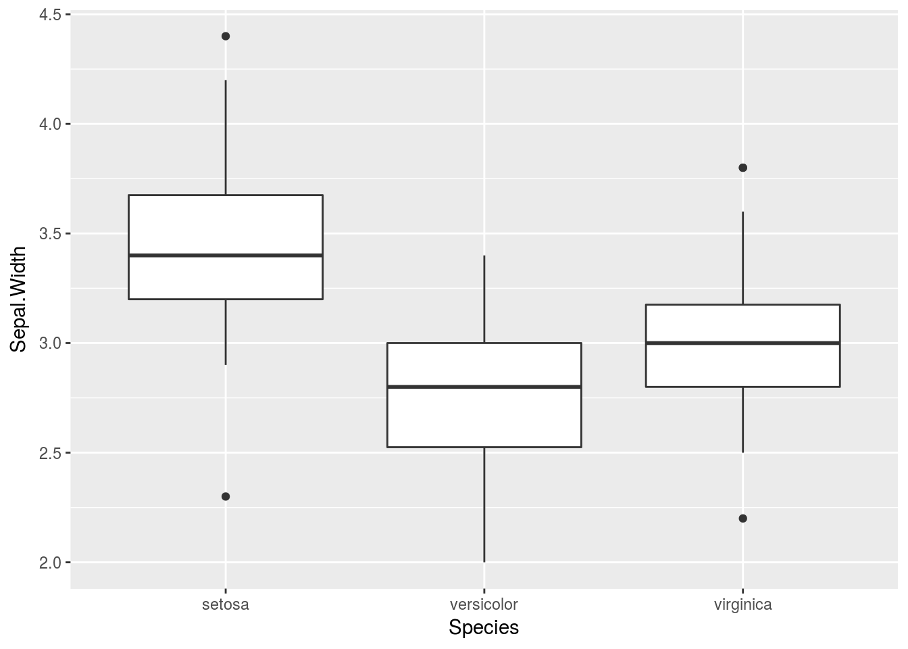

Name your code chunks!
Blogdown is amazing, but there is one thing that tripped me up, and I just worked out why.
I have lots of graphs in my posts, but I was sometimes getting the wrong ones, and I was wondering why that was. I took a look in the Git pane in R Studio and discovered something.
If you make a graph like this with an unnamed code chunk
library(tidyverse)## ── Attaching packages ─────────────────────────────────────────────────────────────────────────── tidyverse 1.2.1 ──## ✔ ggplot2 2.2.1.9000 ✔ purrr 0.2.4
## ✔ tibble 1.4.2 ✔ dplyr 0.7.4
## ✔ tidyr 0.8.0 ✔ stringr 1.3.0
## ✔ readr 1.1.1 ✔ forcats 0.3.0## ── Conflicts ────────────────────────────────────────────────────────────────────────────── tidyverse_conflicts() ──
## ✖ dplyr::filter() masks stats::filter()
## ✖ dplyr::lag() masks stats::lag()ggplot(iris,aes(x=Species,y=Sepal.Width))+geom_boxplot()
you get a .png file in static with a name like unnamed-chunk-2-1.png. All images on a blogdown website go in static, so the name might have been used before, in which case your new graph will overwrite the old one with that name, and suddenly all references to that graph before will be to the new (wrong) graph.
So, the moral of the story is name all your code chunks that contain a graph, and I guess this means that the names have to be unique over your whole blogdown site. Maybe having multipart chunk names that contain the post title and something like a title for the plot is the way to go.
But as for now, I have to go all the way through my blog and make sure that all the code chunks with graphs have chunk names!